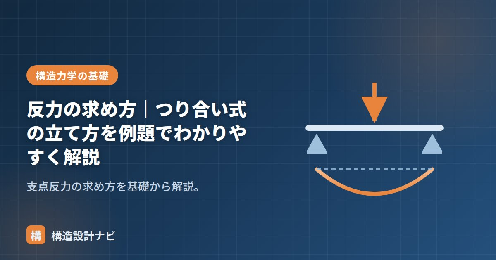

反力の求め方｜つり合い式の立て方を例題でわかりやすく解説

反力とは、荷重を受けた構造物を支点が支え返す力のことです。Q図・M図を描くにも、部材の応力を求めるにも、すべての計算は反力を求めることから始まります。手順はワンパターンなので、この記事の流れをそのまま身につけてください。
支点の種類と反力の数
支点には3種類あり、それぞれ「動きを拘束する方向」にだけ反力が生じます。
| 支点 | 記号のイメージ | 反力の数 | 生じる反力 |
|---|---|---|---|
| ローラー（移動端） | ○つきの三角 | 1 | 鉛直反力 V |
| ピン（回転端） | 三角 | 2 | 鉛直反力 V＋水平反力 H |
| 固定（固定端） | 壁にめり込む形 | 3 | V＋H＋モーメント反力 M |
つり合いの3式
構造物が静止しているなら、外力（荷重＋反力）は必ずつり合っています。使える式はこの3つだけです。
例題：偏った位置に集中荷重を受ける単純梁
スパン L の単純梁（左：ピン支点A、右：ローラー支点B）の、左から a の位置に集中荷重 P が作用する場合を解いてみます。
図：反力は荷重に近い側の支点ほど大きい（てこの原理と同じ）
手順1：支点を反力に置き換える
A点はピンなので VA・HA、B点はローラーなので VB。未知数は3つで、つり合い式も3つなので解けます（＝静定構造）。
手順2：ΣM = 0 を「未知数が消える点」で立てる
モーメントの中心は どこに取ってもよいので、未知の反力が多く通る点を選ぶのがコツです。A点まわりで取れば、VA と HA はモーメントを作らないので消えます。
手順3：残りの式で解く
ΣX = 0： HA = 0（水平荷重がないため）
- モーメントの中心はピン支点に取るのが定石（未知数が2つ消える）。
- 検算は「逆側の支点まわりの ΣM=0」で。VA = Pb/L が再現できれば正解。
- 荷重に近い側の支点ほど反力は大きい。感覚と合うか必ず確認する。
等分布荷重・モーメント荷重の扱い方
- 等分布荷重 w：合力 wL を分布範囲の中央に置いた集中荷重に置き換えてからつり合い式を立てる。
- モーメント荷重 M：ΣY には現れず、ΣM の式にだけ「±M」として加える。作用位置によらず値は同じ。
- 斜めの荷重：水平成分と鉛直成分に分解してから扱う。
記号だけを追って計算すると符号ミスに気づきにくいものです。私は反力の数値が出た瞬間に「荷重に近い支点の反力のほうが大きいか」を感覚と照らし合わせ、逆転していたら真っ先にモーメントの正負設定を疑うようにしています。
例題2：等分布荷重を受ける単純梁
実務でもっとも多く登場するのが等分布荷重です。集中荷重に置き換える手順を確認しましょう。
スパン L の単純梁（左：ピン支点A、右：ローラー支点B）に、全長にわたって等分布荷重 w（N/mm）が作用する場合を解きます。
手順1：合力に置き換える
等分布荷重の合力は「荷重の大きさ × 分布長さ」で、作用位置は分布範囲の中央です。
手順2：つり合い式を立てる
ΣY = 0： VA + VB − wL = 0 → VA = wL / 2
左右対称の荷重なので、当然ながら反力も左右で等しく、それぞれ全荷重の半分になります。対称な構造・対称な荷重なら、計算する前に反力は等分だとわかるため、これは検算の指標として使えます。
例題3：三角形分布荷重
片側が0で反対側が最大となる三角形分布荷重（最大値 w、分布長さ L）の場合、合力と作用位置は次のようになります。
三角形の面積が合力、三角形の重心位置が作用点になる、と覚えると分布形状が変わっても対応できます。台形分布なら、長方形部分と三角形部分に分けてそれぞれの合力を求め、別々の集中荷重として扱えば計算できます。
よくある間違いと対処法
| よくある間違い | なぜ起きるか | 対処法 |
|---|---|---|
| 符号を取り違える | 時計回り・反時計回りの向きを途中で変えてしまう | 最初に「反時計回りを正」などと決め、図に矢印を書き込んでから計算する |
| 等分布荷重の作用位置を間違える | 合力の位置を端部や支点に置いてしまう | 必ず分布範囲の中央（三角形なら1/3点）に置く |
| モーメント荷重をΣYに入れてしまう | 荷重の一種として扱ってしまう | モーメント荷重は力ではないのでΣYには現れない。ΣMにのみ加える |
| 片持ち梁で反力を2つと考える | 固定端の反力を見落とす | 固定端は V・H・M の3つ。モーメント反力を忘れない |
- 合計の確認：鉛直反力の合計が、鉛直荷重の合計と一致するか。
- 逆側でのΣM：反対側の支点まわりでモーメントのつり合いを取り、同じ答えが出るか。
- 感覚との照合：荷重に近い側の反力が大きくなっているか。逆なら符号ミスを疑う。
よくある質問
Q1. 反力が負の値になったらどうすればよいですか？
計算自体は正しく、実際の向きが最初に仮定した向きと逆だという意味です。たとえば上向きと仮定した反力が負になれば、実際には下向きに作用しています。片持ち梁の先端側や、跳ね出し部に荷重が集中する構造では、支点が引き下げられて負の反力が生じることがあります。そのまま次の計算に進んで問題ありませんが、符号ミスがないか一度検算するとよいでしょう。
Q2. なぜ静定構造はつり合い式だけで解けるのですか？
未知数の数（反力の数）とつり合い式の数（ΣX＝0、ΣY＝0、ΣM＝0の3つ）が一致するためです。単純梁ならピン2＋ローラー1で未知数3、式も3なので解けます。反力の数が式より多い構造は不静定構造と呼ばれ、つり合い式だけでは解けず、部材の変形（たわみ）を考慮した条件を追加する必要があります。
Q3. モーメントの中心はどこに取ってもよいのですか？
静止している構造なら、どの点まわりでもモーメントの合計はゼロになるので、どこに取っても正しい答えが得られます。ただし計算の手間が変わります。未知の反力が通る点を中心にすると、その反力はモーメントを作らないため式から消え、未知数が減って簡単に解けます。ピン支点を中心にするのが定石なのはこのためです。
まとめ
- 反力の数は支点で決まる：ローラー1・ピン2・固定3。
- 使う式は ΣX=0・ΣY=0・ΣM=0 の3つだけ。
- ΣM はピン支点まわりで取ると未知数が消えて一発で解ける。
- 等分布荷重は「中央に置いた合力」に置き換える。